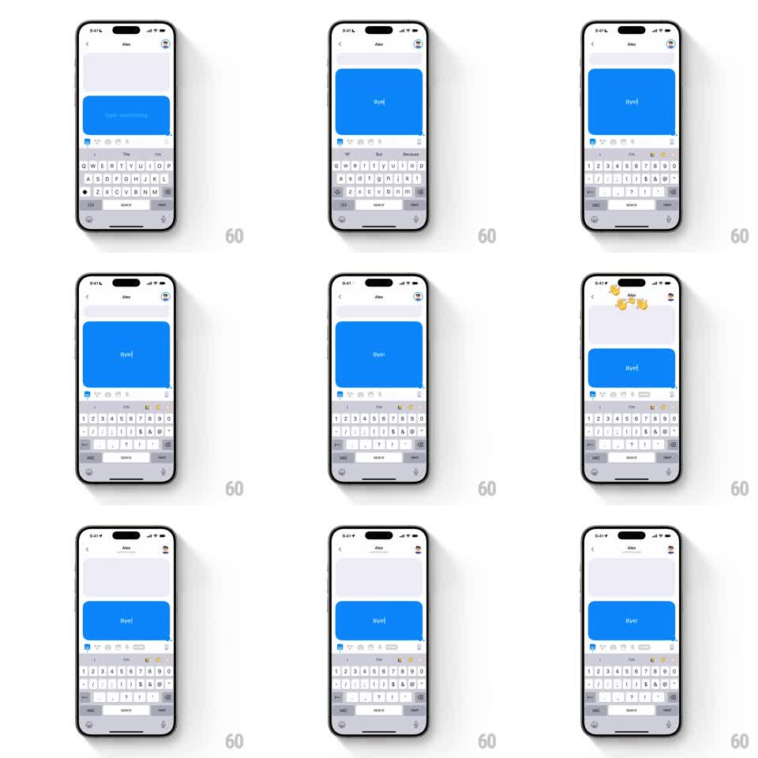

Media
Frame-by-frame

Rebuild this animation 1:1: Honk's goodbye wave - when the chat partner leaves after a "Bye!", a burst of waving-hand emojis floats from the friend's avatar as the header updates its status and the toolbar button transitions.

Rebuild this animation 1:1: Honk's goodbye wave - when the chat partner leaves after a "Bye!", a burst of waving-hand emojis floats from the friend's avatar as the header updates its status and the toolbar button transitions. ## Integration Integration: stack-agnostic spec - springs given as stiffness/damping, timed motions as duration + curve; map every value to your framework and animation library of choice. ## Scene Honk chat with Alex, keyboard open: the user types "Bye!" into the live blue bubble (character by character). The friend's avatar sits top-right. On the partner leaving, waving-hand emojis burst around the avatar, the header subtitle updates, and the Honk toolbar button shifts state. ## Motion spec Pattern: contextual emoji burst keyed to a farewell. - "Bye!" types into the bubble per character (~40ms each) with the bubble's resize spring. - On the leave event: 4-6 waving-hand emojis spawn at the friend's avatar (scale 0 -> 1, 50ms stagger) and float upward-outward (translateY -80 to -140pt, +-40pt horizontal drift, 1.1s, ease-out), each rotating a small wave wiggle (rotate +-15deg at 3Hz) before fading (last 300ms). - Simultaneously: the header subtitle swaps to the away state (old text slides up and out, new text in, 200ms) and the avatar desaturates slightly (200ms). - The toolbar's Honk button morphs to its post-chat state (icon crossfade + scale pulse 1 -> 1.1 -> 1, 200ms). - The "Bye!" bubble stays put, dimming a touch with the chat's inactive state. ## Calibration - The wave burst belongs to the avatar - it says the other person waved goodbye. - Trigger is contextual: the burst fires on the farewell + leave, not on any message. ## Reduced motion Two wave emojis fade over the avatar (400ms); status text swaps instantly. ## Don't miss - The hands must wiggle (the wave) as they float - static floating hands lose the meaning. - Keyboard remains up; only the header, avatar, and toolbar react.